This course requires students to develop a mind-set that recognizes the importance of users
and organizational contexts. Students must employ user-centered methodologies in the
development, evaluation and deployment of IT applications and systems. This requires
graduates to develop knowledge of HCI, including but not limited to such areas as user and
task analysis, human factors, ergonomics, accessibility standards, and cognitive psychology.
Leading higher education institution serving the ASEAN community with quality, innovative and
culture-sensitive programs.
Learn from the best
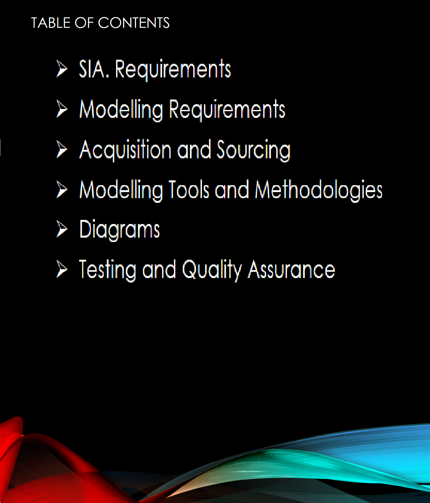
Special Quizzes
Every Topics
Check them out!
Download offline files
i
Data Save?
Learning topics takes time, while you keep learning, data won't stop eating.
DOWNLOAD THE COMPLETE FILES FOR PERSONAL USES WHERE YOU CAN LEARN WITHOUT MOBILE DATA.
⚫ Identify correctly and discuss the phases of the Requirements Life Cycle.
⚫ Illustrate the steps of an existing system using a USE CASE Model.
⚫ Create Activity Diagram of a system.
WHAT ARE REQUIREMENTS?
⚫ Requirements are statements that identify the essential needs of a system in order for it to
have
value and utility.
CHARACTERISTICS OF GOOD REQUIREMENTS
⚫ Describes What, Not How.
⚫ Atomic. i.e., it should have a single purpose.
⚫ Unique.
⚫ Documented and Accessible.
⚫ Identifies Its Owner.
⚫ Approved. After a requirement has been revised, reviewed, and rewritten, it must be approved by
its owner.
⚫ Traceable. A good requirement is traceable; it should be possible to trace each requirement back
to its source.
⚫ Necessary.
⚫ Complete.
⚫ Unambiguous.
⚫ Quantitative and testable.
⚫ Identifies applicable states.
⚫ States Assumptions. All assumptions should be stated.
⚫ Use of Shall, Should, and Will. A mandatory requirement should be expressed using the word shall
(e.g., "The system shall conform to all state laws).
⚫ Avoids Certain Words. The words optimize, maximize, and minimize should not be used in
stating
requirements, because we could never prove that we had achieved them.
A systems development life cycle is composed of a number of clearly defined and distinct
work phases which are used by systems engineers and systems developers to plan for, design,
build, test, and deliver information systems. Like anything that is manufactured on an
assembly line, an SDLC aims to produce high-quality systems that meet or exceed customer
expectations, based on customer requirements, by delivering systems which move through each
clearly defined phase, within scheduled time frames and cost estimates. Computer systems
are complex and often (especially with the recent rise of service-oriented architecture)
link multiple traditional systems potentially supplied by different software vendors. To
manage this level of complexity, a number of SDLC models or methodologies have been created,
such as waterfall, spiral, Agile software development, rapid prototyping, incremental, and
synchronize and stabilize.
⚫ ELICITATION PHASE
The starting point of the requirements engineering process is an elicitation process that
involves a number of people to ensure consideration of a broad scope of potential ideas and
candidate problems.
⚫ ORGANIZATION PHASE
In this step there is no transformation of the requirements, but simple classification and
categorization. For example, requirements may be grouped into functional vs. nonfunctional
requirements.
⚫ ANALYSIS PHASE
This represents a transformation.
⚫ PROTOTYPE PHASE
In this way poorly understood requirements may be tested and perhaps strengthened, corrected,
or refined. This activity is often done as a proof of concept and serves to induce feedback
from both the stakeholders and engineers.
⚫ REQUIREMENTS DOCUMENTATION AND SPECIFICATION
This represents the requirements as the finished product of the stakeholder requirements
team. The requirements are compiled into a requirements list or into some equivalent
document format. These collected requirements are then transformed into a specification.
1.1.1. Requirements Elicitation, Documentation, and
Maintenance
REQUIREMENTS ELICITATION
⚫ Requirements determination addresses the gathering and documenting of the true and real
requirements for the Information System being developed.
⚫ Requirements is the wants and /or needs of the user within a problem domain.
REQUIREMENTS DETERMINATION QUESTIONS
⚫ WHO DOES IT?
⚫ WHAT IS DONE?
⚫ WHERE IS IT DONE?
⚫ WHEN IS IT DONE
⚫ HOW IS IT DONE
⚫ WHY IS IT DONE?
SYSTEMS REQUIREMENTS
⚫ Characteristics or features that must be included to satisfy business requirements
-- Outputs
-- Inputs
-- Processes
-- Timing
-- Controls
-- Volumes. sizes, and frequencies
⚫ Data/Information collected can be about; people, organization, work and work environment.
FACT – FINDING METHODS
⚫ SAMPLING (OF EXISTING DOCUMENTATION, FORMS, AND DATABASES).
⚫ RESEARCH AND SITE VISITS. (PARTICIPATION)
⚫ OBSERVATION OF THE WORK ENVIRONMENT.
⚫ QUESTIONNAIRES.
⚫ INTERVIEWS.
⚫ PROTOTYPING.
⚫ JAD/JOINT REQUIREMENTS PLANNING (JRP).
TYPES OF REQUIREMENTS
⚫ User Requirements: these are statements in Natural language plus diagrams of services the
system provides, together with its operational constraints. These can be categorised into 2;
functional requirements and non-functional requirements
-- Functional requirements -> Describe what the system should do.
-- Non-functional requirements -> Consists of Constraints that must be adhered to
during development (design and implementation)
⚫ System requirements
• What we agree to provide
• Describes system services
• Contract between Client and contractor
FUNCTIONAL REQUIREMENTS
⚫ WHAT INPUTS THE SYSTEM SHOULD ACCEPT
⚫ WHAT OUTPUTS THE SYSTEM SHOULD PRODUCE
⚫ WHAT DATA THE SYSTEM SHOULD STORE THAT OTHER SYSTEMS MIGHT USE
⚫ WHAT COMPUTATIONS THE SYSTEM SHOULD PERFORM
⚫ THE TIMING AND SYNCHRONIZATION OF THE ABOVE
NON-FUNCTIONAL REQUIREMENTS
⚫ Non-functional requirements are global constraints on a computer system.
-- e.g. development costs, operational costs, performance, reliability,
⚫ The challenge of Non-functional requirements:
-- Hard to model
-- Usually stated informally, and so are:
• often contradictory,
• difficult to enforce during development
• difficult to evaluate for the customer prior to delivery
⚫ Define system properties and constraints e.g. reliability, response time and storage requirements.
Constraints are I/O device capability, system representations.
⚫ Process requirements may also be specified mandating a particular programming language or
development method
⚫ Non-functional requirements may be more critical than functional requirements. If these are not
met, the system is useless.
EXAMPLES OF NFR
⚫ Interface requirements
-- How will the new system interface with its environment?
-- User interfaces and “user-friendliness”
-- Interfaces with other systems
⚫ Performance requirements
-- Time - response time
-- Output - transactions per second
⚫ Security
-- permissible information flows
-- Or who can do what
-- Survivability – e.g. system will need to survive fire natural catastrophes, etc
⚫ limits on development
-- E.g. development time limitations, resource availability and methodological standards.
⚫ Economic requirements
-- E.g. restrictions on immediate and/or long-term costs.
REQUIREMENTS DOCUMENTATION
⚫ There are basically two types of documents realized from the requirements elicitation phase. These
include;
-- User Requirements Specification Document
-- System requirements specification Document
USER REQUIREMENTS SPECIFICATION –URS/URD
⚫ The URS document outlines precisely what the User (or customer) is expecting from this system.
⚫ User Requirement Specification may incorporate the functional requirements of the system or may
be in a separate document labelled the Functional Requirements Specification - the FRS.
The URD has the following information:
1. Functional Requirements
2. Non-Functional Requirements
SYSTEM REQUIREMENTS SPECIFICATION DOCUMENT
A detailed description of the system services.
⚫ What do we agree to provide?
⚫ A structured document setting out detailed descriptions of the system services.
⚫ Written as a contract between client and contractor.
TOOLS THAT AID IN DEVELOPING & UNDERSTANDING SYSTEM REQUIREMENTS
We build models in requirements analysis to understand
⚫ Current systems or business processes which we are trying to automate
⚫ How users will use a new system
The software requirements document is the official statement of what is required of the system
developers.
⚫ Should include both a definition of user requirements and a specification of the system
requirements.
⚫ It is NOT a design document. As far as possible, it should set WHAT the system should do
rather than HOW it should do it.
Requirements Document Variability
Information in requirements document depends on the type of system and the approach to
development used.
Systems developed incrementally will, typically, have less detail in the requirements
document.
Requirements documents standards have been designed e.g. IEEE standard. These are mostly
applicable to the requirements for large systems projects.
The Structure of a Requirements Document
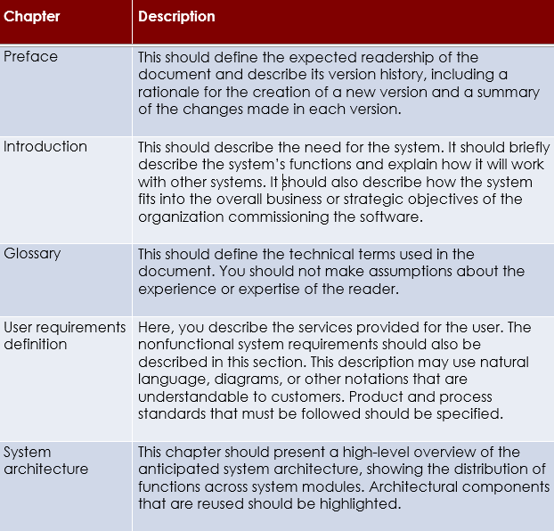
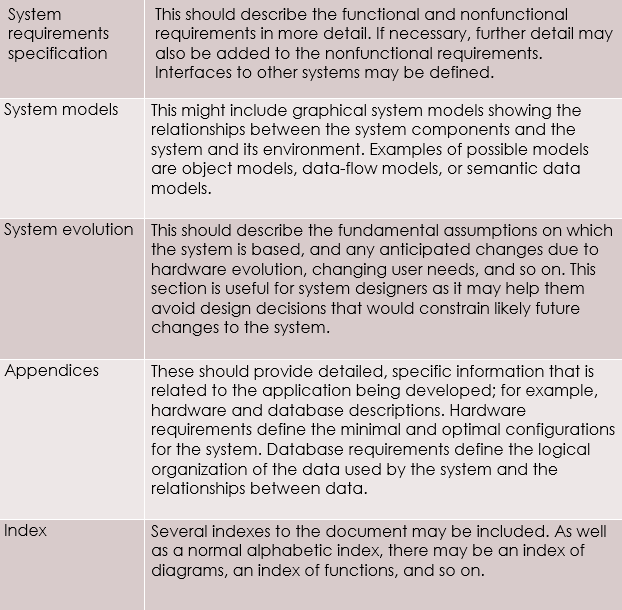
×
Modal Header
1.1.3. Modelling Tools and Methodologies
Unified Modeling Language (UML)
⚫ Use case diagrams
⚫ Class diagrams
⚫ Sequential diagrams
⚫ State Diagrams
USE CASE MODEL
⚫ Describes the proposed functionality of the new system
⚫ Represent a discrete unit of interaction between a user and the system
⚫ A single unit of meaningful work
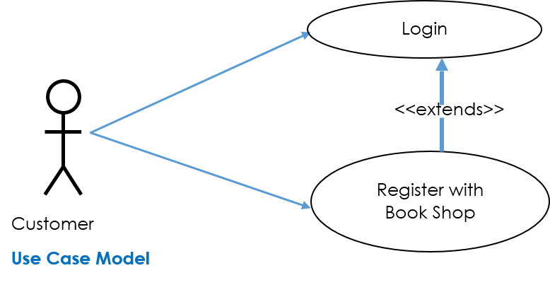
A Use Case may ‘include’ another Use Case’s functionality or ‘extend’ another Use Case with its own behavior.
Example:
• Login to system
• Register with system
• Create order
A Use Case description will generally include:
• General comments and notes describing the Use Case
• Requirements- things that the Use Case must allow the user to do such as
< ability to update order >
< ability to modify order > and others.
A Use Case may include:
-> Pre-conditions that must be true before the Use Case is run –e.g. < create order> must precede < modify order>;
-> Post-conditions that must be true before once the Use Case is run –e.g. < order is modified and consistent>;
-> Invariants: these are always true –e.g. an order must always have a customer number;
-> Scenarios: Sequential descriptions of the steps taken to carry out the Use Case. May include multiple scenarios, to cater for exceptional circumstances and alternate processing paths;
-> Scenario Diagrams: Sequence diagrams to depict the workflow – as above but graphically portrayed;
-> Additional attributed such as implementation phase, version number, complexity rating, stereotype and status.
An ACTOR:
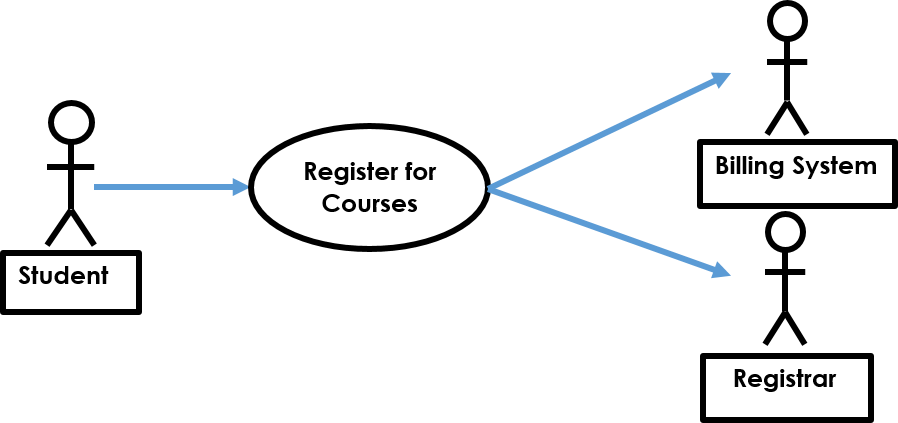
⚫ Here we have a Student interacting with the Registrar and the Billing System via a “Register for Courses” Use Case
×
Modal Header
Sequence Diagrams
⚫ A sequence diagram is an interaction diagram that emphasizes the time ordering of messages
⚫ It shows a set of objects and the messages sent and received by those objectsClass diagrams
⚫ Sequence diagrams can be used to document Use Case Scenarios
⚫ Captures required objects early in analysis and verify object usage later in design
⚫ Shows the flow of messages from one object to another, and as such correspond to the methods and events supported by a class/object
⚫ Represent a discrete unit of interaction between a user and the system
⚫ Graphically, a sequence diagram is a table that shows objects arranged along the X axis and messages, ordered in increasing time, along the Y axis.
Sequence Diagrams – Objects Symbols
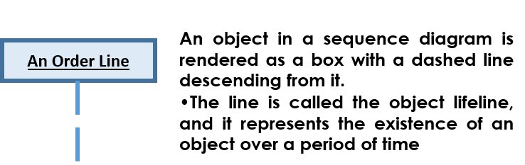
Sequence Diagrams – Message Indicators
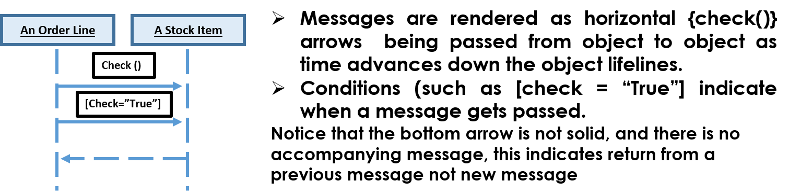
Sequence Diagrams – Iteration Marker
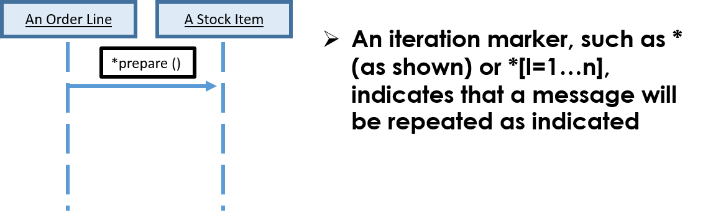
Sample Sequence Diagrams: (a)
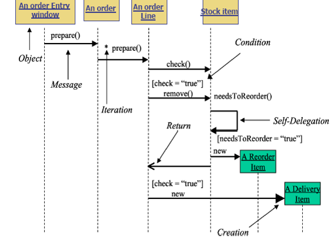
(b)
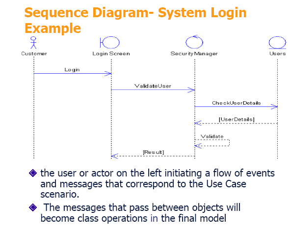
ACTIVITY DIAGRAM
⚫ Models the procedural flow of actions that are part of a larger activity
⚫ Used to model system-level functions
⚫ Focuses on the action sequence of execution and the conditions that trigger or guard those actions.
⚫ Has a very similar notations to that of a state machine diagram
⚫ An action is indicated by a “capsule” shape – a rectangular object with semi-circular left and ends.
⚫ The text inside it indicates the action (e.g., Customer Calls Ticket Office or Registration Office Opens).
⚫ The initial state is drawn as a solid circle with a transition line (arrow) that connects it to the first action in the activity’s sequence of actions.
⚫ It is important to note that there can be only one initial state on an activity diagram and only one transition line connecting the initial state to an action.
The Figure above indicates INCORRECT rendering of an initial state within an activity diagram.
⚫ Arrows indicate directions, the transition lines on an activity diagram show the sequential flow of actions in the modelled activity. It always point to the next action in the activity’s sequence.
Activity Diagram – How a customer books a concert ticket.
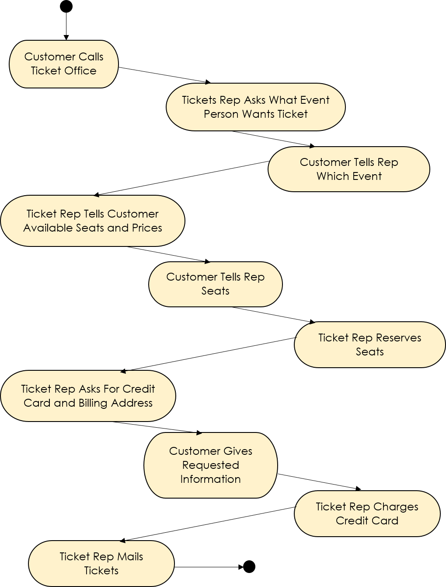
The sample activity diagram documents the activity “Booking a Concert Ticket,” with actions in the following order:
The action order is clear from the diagram because it shows an initial state (starting point), and from that point one can follow the transition lines as they connect the activity’s action. It is possible for an activity diagram to show multiple final sates. Unlike initial state symbols, of which there can be only one on an activity.
Decision points
Typically, decisions need to be made throughout an activity, depending on the outcome of a specific prior action.
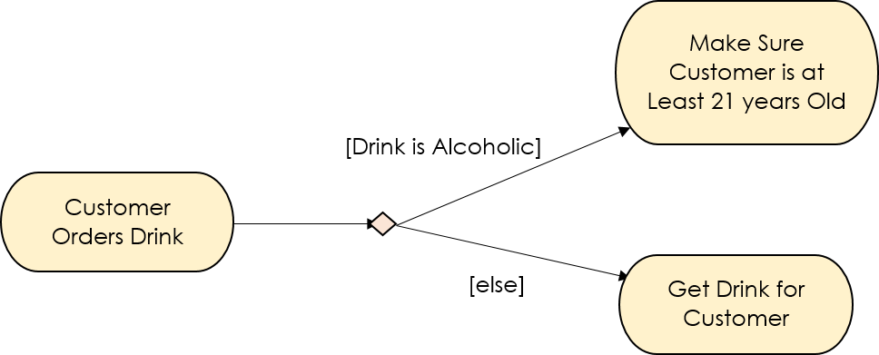
⚫ Each transition line involved in a decision point must be labelled with text above it to indicate “guard conditions,” commonly abbreviated as guards.
⚫ Guard condition text is always placed in brackets—for example, [guard condition text]
⚫ A guard condition explicitly tells when to follow a transition line to the next action
Merge points
Sometimes the procedural flow from one decision path may connect back to another decision path. In these cases we connect two or more action paths together using the same diamond icon with multiple paths pointing to it, but with only one transition line coming out of it. This indicate a merge decision point.
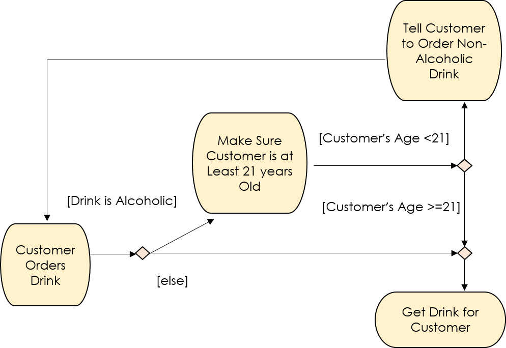
A partial activity diagram, showing two decision points:
(“Drink is alcoholic” and “Customer’s Age < 21") and one merge
(“else” and “Customer’s Age >=21”)
×
Modal Header
1.1.4. Testing
What is Testing?
Testing is the process of evaluating a system or its component(s) with the intent to find whether it satisfies the specified requirements or not. In simple words, testing is executing a system in order to identify any gaps, errors, or missing requirements in contrary to the actual requirements.
According to ANSI/IEEE 1059 standard, Testing can be defined as - A process of analyzing a software item to detect the differences between existing and required conditions (that is defects/errors/bugs) and to evaluate the features of the software item.
Who does Testing?
It depends on the process and the associated stakeholders of the project(s). In the IT industry, large companies have a team with responsibilities to evaluate the developed software in context of the given requirements. Moreover, developers also conduct testing which is called Unit Testing. In most cases, the following professionals are involved in testing a system within their respective capacities:
• Software Tester
• Software Developer
• Project Lead/Manager
• End User
Different companies have different designations for people who test the software on the basis of their experience and knowledge such as Software Tester, Software Quality Assurance Engineer, QA Analyst, etc.
It is not possible to test the software at any time during its cycle. The next two sections state when testing should be started and when to end it during the SDLC.
When to Start Testing?
An early start to testing reduces the cost and time to rework and produce error-free software that is delivered to the client. However in Software Development Life Cycle (SDLC), testing can be started from the Requirements Gathering phase and continued till the deployment of the software.
It also depends on the development model that is being used. For example, in the Waterfall model, formal testing is conducted in the testing phase; but in the incremental model, testing is performed at the end of every increment/iteration and the whole application is tested at the end.
Testing is done in different forms at every phase of SDLC:
⚫ During the requirement gathering phase, the analysis and verification of requirements are also considered as testing.
⚫ Reviewing the design in the design phase with the intent to improve the design is also considered as testing.
⚫ Testing performed by a developer on completion of the code is also categorized as testing.
When to Stop Testing?
It is difficult to determine when to stop testing, as testing is a never-ending process and no one can claim that a software is 100% tested. The following aspects are to be considered for stopping the testing process:
• Testing Deadlines
• Completion of test case execution
• Completion of functional and code coverage to a certain point
• Bug rate falls below a certain level and no high-priority bugs are identified
• Management decision
Verification & Validation
These two terms are very confusing for most people, who use them interchangeably. The following table highlights the differences between verification and validation.
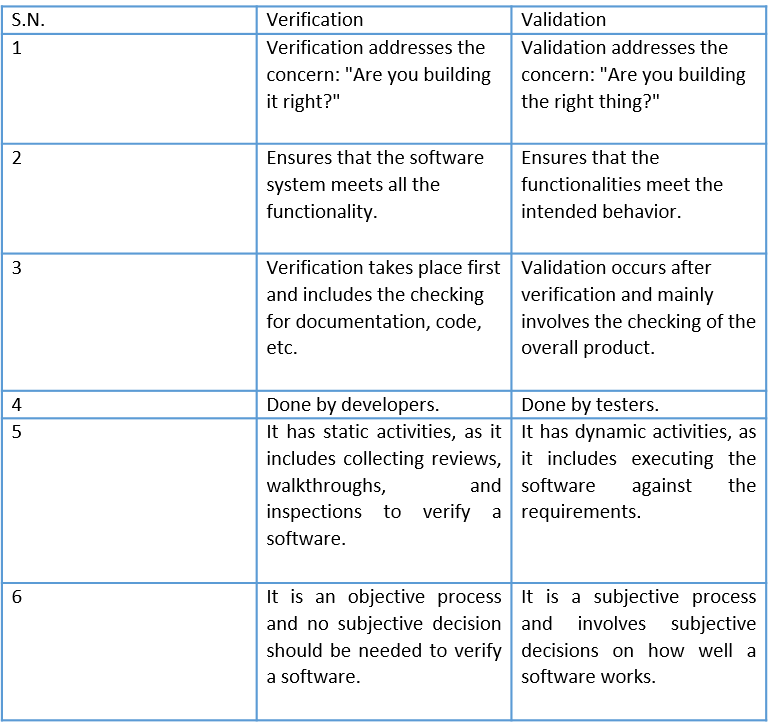
Software Testing - Myths
Given below are some of the most common myths about software testing.
Myth 1: Testing is Too Expensive
Reality: There is a saying, pay less for testing during software development or pay more for maintenance or correction later. Early testing saves both time and cost in many aspects, however reducing the cost without testing may result in improper design of a software application rendering the product useless.
Myth 2: Testing is Time-Consuming
Reality: During the SDLC phases, testing is never a time-consuming process. However diagnosing and fixing the errors identified during proper testing is a time-consuming but productive activity.
Myth 3: Only Fully Developed Products are Tested
Reality: No doubt, testing depends on the source code but reviewing requirements and developing test cases is independent from the developed code. However iterative or incremental approach as a development life cycle model may reduce the dependency of testing on the fully developed software.
Myth 4: Complete Testing is Possible
Reality: It becomes an issue when a client or tester thinks that complete testing is possible. It is possible that all paths have been tested by the team but occurrence of complete testing is never possible. There might be some scenarios that are never executed by the test team or the client during the software development life cycle and may be executed once the project has been deployed.
Myth 5: A Tested Software is Bug-Free
Reality: This is a very common myth that the clients, project managers, and the management team believes in. No one can claim with absolute certainty that a software application is 100% bug-free even if a tester with superb testing skills has tested the application.
Myth 6: Missed Defects are due to Testers
Reality: It is not a correct approach to blame testers for bugs that remain in the application even after testing has been performed. This myth relates to Time, Cost, and Requirements changing Constraints. However the test strategy may also result in bugs being missed by the testing team.
Myth 7: Testers are Responsible for Quality of Product
Reality: It is a very common misinterpretation that only testers or the testing team should be responsible for product quality. Testers’ responsibilities include the identification of bugs to the stakeholders and then it is their decision whether they will fix the bug or release the software. Releasing the software at the time puts more pressure on the testers, as they will be blamed for any error.
Myth 8: Test Automation should be used Wherever Possible to Reduce Time
Reality: Yes, it is true that Test Automation reduces the testing time, but it is not possible to start test automation at any time during software development. Test automaton should be started when the software has been manually tested and is stable to some extent. Moreover, test automation can never be used if requirements keep changing.
Myth 9: Anyone can Test a Software Application
Reality: People outside the IT industry think and even believe that anyone can test a software and testing is not a creative job. However testers know very well that this is a myth. Thinking alternative scenarios, try to crash a software with the intent to explore potential bugs is not possible for the person who developed it.
Myth 10: A Tester’s Only Task is to Find Bugs
Reality: Finding bugs in a software is the task of the testers, but at the same time, they are domain experts of the particular software. Developers are only responsible for the specific component or area that is assigned to them but testers understand the overall workings of the software, what the dependencies are, and the impacts of one module on another module.